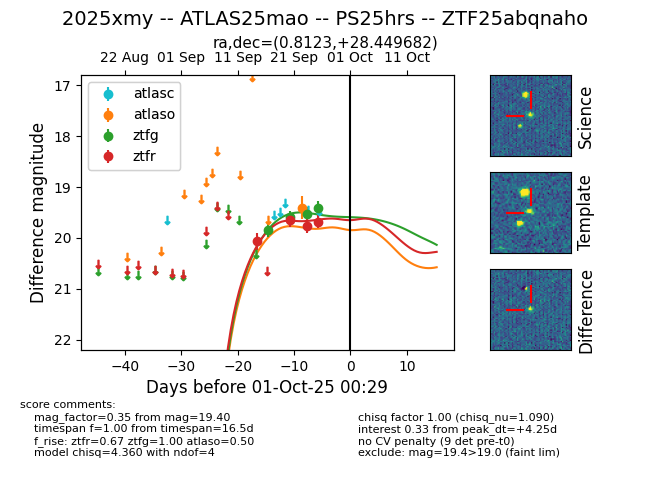
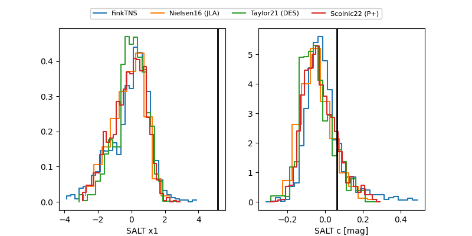

FINK: ZTF25abqnaho
Lasair: ZTF25abqnaho
ALeRCE: ZTF25abqnaho
TNS: 2025xmy
YSE: 2025xmy
ZTF25abqnaho (ztf,fink)
2025xmy (tns,yse)
ATLAS25mao (atlas)
PS25hrs (panstarrs)
equatorial (ra, dec) = (0.8123,+28.44968)
galactic (l, b) = (110.2585,-33.23340)


last atlaso=19.41, ztfg=19.40, ztfr=19.68
1 atlaso, 4 ztfg, 4 ztfr detections